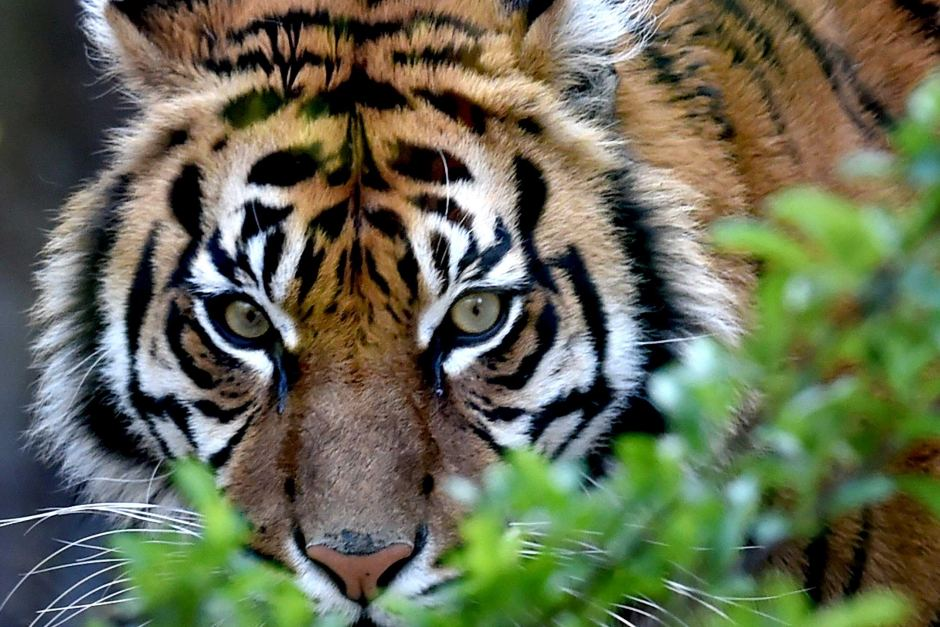

Welcome to the wild!
Every day of the year could feel like a holiday, especially if you make your way to Cute Animal Zoo, with a large variety of animals, including tigers, crocodiles, buck, raccoons, cranes, flamingoes, wallabies, monkeys and tortoises, occupies a large part of the zoo. The remainder consisted of beautifully landscaped gardens. One of the most memorable animals at the zoo is Nellie, an Indian elephant.
There is a walk-through aviary that allows you to get close-up views of many beautiful bird varieties.
Speaker of the Month
Fossil Threads in the Web of Life

February
Scott Sampson
What's 75 million years old and brand spanking new? A teenage Utahceratops! Come to the Saroyan, armed with your best dinosaur roar, when Scott Sampson, Research Curator at the Utah Museum of Natural History, steps to the podium. Sampson's research has focused on the ecology and evolution of late Cretaceous dinosaurs and he has conducted fieldwork in a number of countries in Africa.
Read more.
Or meet us there!
Our Ticket Packages
- Season Package: $95
- Patron Package: $200
- Single Speaker: $25